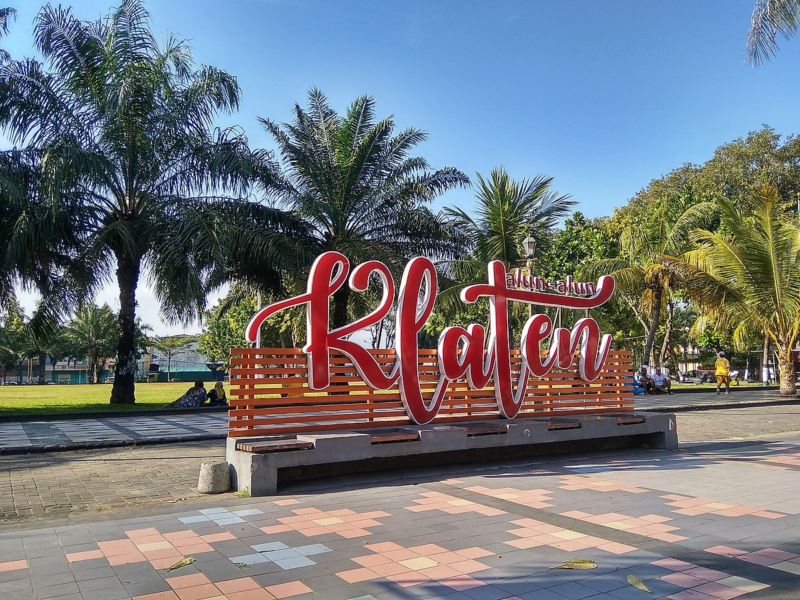

Selamat Datang di Situs Budaya Klaten

Mempersembahkan informasi budaya dan tradisi yang kaya akan nilai dan kearifan lokal dari Klaten, Jawa Tengah.
Temukan keindahan dalam tarian, ritual adat, serta kuliner khas yang tak lekang oleh waktu.
Mari berpetualang dalam kekayaan budaya yang memikat, sekaligus menjaga warisan leluhur untuk generasi mendatang.